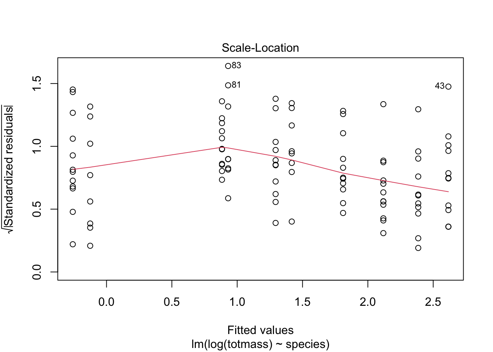
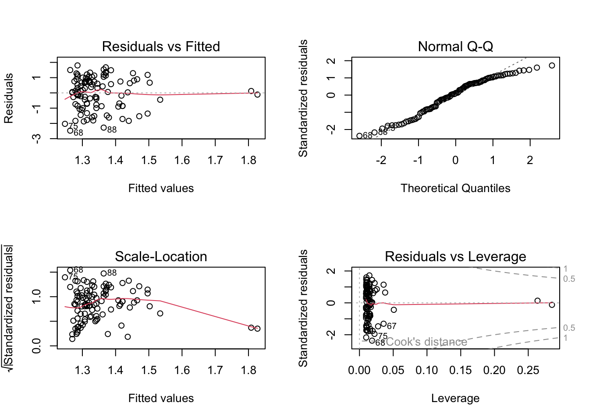
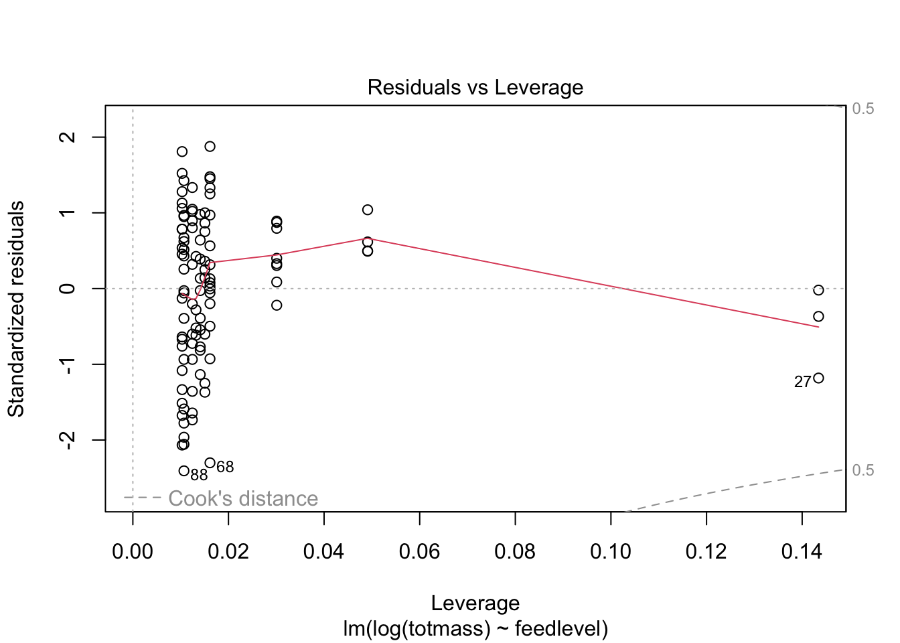

Sarracenia are carnivorous pitcher plants that use their pitcher-shaped leaves to catch arthropod prey for nutrition (Milne and Waller 1). Oftentimes, the majority of their diet is made up of spiders, however Sarracenia also feed on insects, mites, mollucks, and occcasionally, even small verterbrates (Milne 1). This carnivorous pitcher plant has many uses for humans including treatments for type 2 diabetes and tuberculosis-like symptoms (Huang et al. 1). Therefore, understanding what morphological, physiological, or taxonomic characteristics predict biomass may be useful if these pitcher plants began to be used for medical purposes. Moreover, understanding what factors predict pitcher plant biomass can also be helpful to understand how climate change may affect these plants if certain pitcher plant growth biomass factors are depleted. As a result, this statistical analysis revolves around the question of how Sarracenia characteristics predict biomass. We are testing the null hypothesis that Sarracenia characteristics do not predict biomass against the alternative hypothesis that Sarracenia characteristics do predict biomass.
Methods
The data from the dataset was compiled by conducting an experiment in which two plants of each Sarracenia species (10 Sarracenia species in total) were assigned to one of six feeding levels ranging from 0 - 0.25g of finely ground wasps per feeding (for small species), 0 - 0.5g for intermediate sized species, and 0 - 1.0g for large species (Ellison and Farnsworth). The plants were fed once a week for a total of 7 weeks. In addition, aboveground size and photosynthetic rate were measured before treatments started (metadata). To organize these data, the column names were made cleaner using the clean() function and only certain columns were selected (totmass, species, feedlevel, sla, chlorophyll, amass, num_lvs, num_phyll).
Code
library(tidyverse)library(here)library(janitor)library(ggeffects)library(performance)library(naniar) # or equivalentlibrary(flextable) # or equivalentlibrary(car)library(broom)# would be nice to havelibrary(corrplot)library(AICcmodavg)library(GGally)library(MuMIn)
Next, a visualization of the missing data were created, which showed there were missing data in the sla, chlorophyll, amass, num_lvs, and num_phylls column. Therefore, the missing data were dropped from the dataset and a new subset of data was created without the missing data.
Visualize the missing data:
Code
gg_miss_var(plant)
Figure 1: Missing Data. Number of missing data entries on the x-axis and number of variables on the y-axis. Lines correspond to number of missing data values for each variable.
To determine the Pearson’s correlation between variables, we calculated Pearson’s r and visually represented correlation using a correlation plot. Pearson’s r was calculated by computing the covariances, or correlations, between two variables (such as species versus biomass or chlorophyll versus number of pitcher plants) which was done by taking the covariance of the two variables and dividing them by the product of their standard deviations. This was done for every pair of variables, so that each variable was compared to itself as well as each variable measured.
Code
# calculate Pearson's r for numerical values onlyplant_cor <- plant_subset %>%select(feedlevel:num_phylls) %>%# diagonals show correlation between variables and themselves = 1cor(method ="pearson")# creating a correlation plot (visual representation of correlation matrix); larger shapes mean greater correlation; color represents directioncorrplot(plant_cor,# change the shape of what's in the cellsmethod ="ellipse", # add correlation coefficients into plotaddCoef.col ="black" )
Moreover, to determine the relationships between variables, a pairs plot was created, comparing each variable to itself and every variable measured. The results were formatted into several visualizations that showed the relationships between them.
Create a plot of each variable compared against the others
In addition, to determine how species and physiological characteristics predict biomass, we fit multiple linear models. The null model did not include any predictors in the model, while the full model included all predictors in the model.
Code
# null = no predictors in modelnull <-lm(totmass ~1, data = plant_subset)# full = all potential predictors in modelfull <-lm(totmass ~ species + feedlevel + sla + chlorophyll + amass + num_lvs + num_phylls, data = plant_subset)
We visually assessed the normality and homoskedasticity of residuals using diagnostic plots for the full model.
Code
par(mfrow =c(2, 2))plot(full)
We also tested for normality using the Shapiro-Wilk test and tested for for homoskedasticity using the Breusch-Pagan test.
Code
check_normality(full)
Warning: Non-normality of residuals detected (p < .001).
For the original data, this resulted in non-normality and heteroscedasticity in the residuals, therefore, the data was transformed into its natural log form to create normality and homoscedasticity in the residuals (only the response variable was transformed, not the predictors). The same tests were run for normality and homoscedasticity using the transformed data and the assumptions for the full model were met.
Code
# log function = natural log# transforming data into natural log form to create normality and homoscedasticity# when transforming, you're only concerned with the response variable, not the predictorsnull_log <-lm(log(totmass) ~1, data = plant_subset)full_log <-lm(log(totmass) ~ species + feedlevel + sla + chlorophyll + amass + num_lvs + num_phylls, data = plant_subset)# assumptions of linear regression are met using log transformationplot(full_log)
Code
check_normality(full_log)
OK: residuals appear as normally distributed (p = 0.107).
Code
check_heteroscedasticity(full_log)
OK: Error variance appears to be homoscedastic (p = 0.071).
In addition to the full and null models, three additional models were created to determine how species and certain physiological characteristics predict biomass. The first additional model created explored how species predicted total biomass because oftentimes, varying species will have different characteristics resulting in differing biomasses. The assumptions (normality and homoscedasticity) were met.
model 2:
Code
model2_log <-lm(log(totmass) ~ species, data = plant_subset)
check assumptions for model 2:
Code
plot(model2_log)

Code
check_normality(model2_log)
OK: residuals appear as normally distributed (p = 0.374).
Code
# residuals are normally distributedcheck_heteroscedasticity(model2_log)
OK: Error variance appears to be homoscedastic (p = 0.100).
Code
# variances appear homoscedastic
The second additional model created explored how chlorophyll affects total biomass. Although the normality assumption was not met, I still chose to use this model as chlorophyll allows plants to undergo photosynthesis, which allows plants to create sugar, promoting plant growth. Therefore, chlorophyll could directly affect a pitcher plant’s total biomass.
model 3:
Code
model3_log <-lm(log(totmass) ~ chlorophyll, data = plant_subset)
check assumptions for model 3:
Code
plot(model3_log)

Code
check_normality(model3_log)
Warning: Non-normality of residuals detected (p = 0.002).
Code
# non normality of residuals detectedcheck_heteroscedasticity(model3_log)
OK: Error variance appears to be homoscedastic (p = 0.546).
Code
# error variance appears homoscedastic
The third model created explored how feedlevel affects total biomass. Once again, although the normality assumption was not met, I still used this model because if a plant has access to more food, then the plant would likely have a larger biomass.
model 4:
Code
model4_log <-lm(log(totmass) ~ feedlevel, data = plant_subset)
check assumptions for model 4:
Code
plot(model4_log)

Code
check_normality(model4_log)
Warning: Non-normality of residuals detected (p = 0.018).
Code
# non normality of residuals detectedcheck_heteroscedasticity(model4_log)
OK: Error variance appears to be homoscedastic (p = 0.261).
Code
# variance appears homoscedastic
A model comparison between all of these models was created using Akaike’s Information criterion (AIC) values. We looked for the simplest model that explains the most variance, which is essentially a compromise between complexity of model and how well model predicts the response. We compared models using AIC and chose the model with the lowest value, which was full_log.
Next, a variance inflation factor check looking for multicollinearity was run for the full model to determine if there were any variances inflating the R^2 values. We evaluated multicollinearity by calculating generalized variance inflation factors and determined that there is no multicollinearity because the GVIF values were are less than 5, meaning none of the predictors were inflating the R^2 value.
Based on the tests run, we found that the full model including species, feedlevel, sla, chlorophyll, amass, num_lvs, and num_phylls predictors best predicted total biomass of pitcher plants (F = 38.38 on 15 and 87 DF, R^2 = 0.85, p < 0.001, n = 103, α = 0.05).
Works Cited:
Ellison, Aaron. and Elizabeth Farnsworth. “Effects of Prey Availability on Sarracenia Physiology at Harvard Forest 2005.” Environmental Data Initiative, ver 18, https://doi.org/10.6073/pasta/26b22d09279e62fd729ffc35f9ef0174 (Accessed 2023-06-01).
Huang, Yen-Hua, et al. “Anticancer and Antioxidant Activities of the Root Extract of the Carnivorous Pitcher Plant Sarracenia Purpurea.” Plants, vol. 11, no. 13, 2022, p. 1668, https://doi.org/10.3390/plants11131668.
Milne, Marc A. “The Purple Pitcher Plant as a Spider Oviposition Site.” Southeastern Naturalist, vol. 11, no. 4, 2012, pp. 567–574, https://doi.org/10.1656/058.011.0402.
Milne, Marc A., and Deborah A. Waller. “Carnivorous Pitcher Plants Eat a Diet of Certain Spiders, Regardless of What’s on the Menu.” Ecosphere, vol. 9, no. 11, 2018, https://doi.org/10.1002/ecs2.2504.